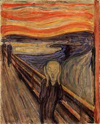

122. The Scream. Edvard Munch. 1893 CE Tempera and Pastels on cardboard.
- Form and Content
- The figure walks along a wharf; boats are at sea in the distance
- Long, thick brushstrokes swirl around the composition
- The figure cries out in a horrifying scream; the landscape echoes his emotions
- Discordant colors symbolize anguish
- Emaciated, twisting stick figure with skull-like head
- Function
- Painted as part of a series called the Frieze of Life; a semi autobiographical succession of paintings
- Context
- Said to have been inspired by an exhibit of a Peruvian mummy in Paris
- The work prefigures Expressionist art
- The work is influenced by Art Nouveau swirling patterns